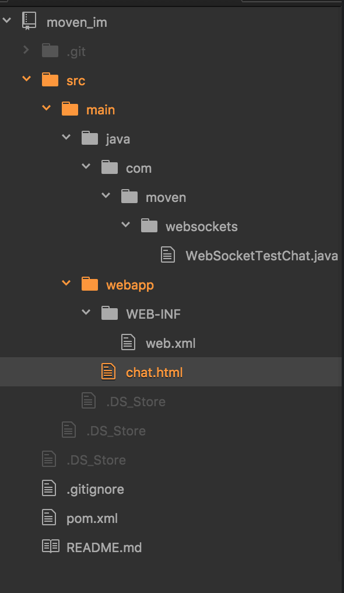

webSocket
目录结构如下

WebSocketTestChat.java里的代码:
package com.moven.websockets;
import java.io.IOException;
import java.util.Set;
import javax.servlet.http.HttpSession;
import javax.websocket.OnClose;
import javax.websocket.OnError;
import javax.websocket.OnMessage;
import javax.websocket.OnOpen;
import javax.websocket.Session;
import javax.websocket.server.PathParam;
import javax.websocket.server.ServerEndpoint;
@ServerEndpoint("/chat/{username}")
public class WebSocketTestChat {
Set<Session> session_list = null;
@OnMessage
public void onMessage(String message, Session session) {
try{
session_list = session.getOpenSessions();
HttpSession httpSession = null;
String username = "";
if(session instanceof HttpSession){
httpSession = (HttpSession)session;
Object param = httpSession.getAttribute("username");
if(null != param){
username = param.toString();
}
} else {
username = session.getId();
}
for (Session s : session_list) {
s.getBasicRemote().sendText("当前总人数[" + session_list.size() + "]---" + username + "说:" + message);
}
} catch(IOException e){
System.out.println("Client error");
}
}
@OnError
public void onError(Throwable t) throws Throwable {
System.out.println("Client error = "+t.getMessage());
}
@OnOpen
public void onOpen(@PathParam("username") String username, Session session) {
HttpSession httpSession = null;
if(session instanceof HttpSession){
httpSession = (HttpSession)session;
httpSession.setAttribute("username", username);
}
System.out.println("Client connected");
}
@OnClose
public void onClose() {
System.out.println("Connection closed");
}
}
chat.html里边的代码
<!DOCTYPE html>
<html>
<head>
<title>Testing websockets</title>
</head>
<body>
<div>
<textarea name="text" id="text" rows="3" cols="20"></textarea>
<input type="submit" value="send" onclick="start()" />
</div>
<div id="messages"></div>
<script type="text/javascript">
var webSocket = new WebSocket(
'ws://local.moven.cn:8081/moven_im/chat/msw/lyh');
webSocket.onerror = function(event) {
onError(event)
};
webSocket.onopen = function(event) {
onOpen(event)
};
webSocket.onmessage = function(event) {
onMessage(event)
};
function onMessage(event) {
document.getElementById('messages').innerHTML += '<br />'
+ event.data;
}
function onOpen(event) {
document.getElementById('messages').innerHTML = 'Connection established';
}
function onError(event) {
alert(event.data);
}
function start() {
var text = document.getElementById('text').value;
if(text){
webSocket.send(text);
} else {
alert("Message can't be null");
}
document.getElementById('text').value = '';
return false;
}
</script>
</body>
</html>
web.xml里边的代码
<?xml version="1.0" encoding="UTF-8"?>
<web-app xmlns:xsi="http://www.w3.org/2001/XMLSchema-instance"
xmlns="http://java.sun.com/xml/ns/javaee" xmlns:web="http://java.sun.com/xml/ns/javaee/web-app_2_5.xsd"
xsi:schemaLocation="http://java.sun.com/xml/ns/javaee
http://java.sun.com/xml/ns/javaee/web-app_3_0.xsd"
id="WebApp_ID" version="3.0">
<display-name>Simple web application</display-name>
</web-app>
pom.xml里边的代码
<project xmlns="http://maven.apache.org/POM/4.0.0" xmlns:xsi="http://www.w3.org/2001/XMLSchema-instance"
xsi:schemaLocation="http://maven.apache.org/POM/4.0.0 http://maven.apache.org/xsd/maven-4.0.0.xsd">
<modelVersion>4.0.0</modelVersion>
<groupId>com.moven</groupId>
<artifactId>moven_im</artifactId>
<version>1.0-SNAPSHOT</version>
<packaging>war</packaging>
<properties>
<project.build.sourceEncoding>UTF-8</project.build.sourceEncoding>
</properties>
<build>
<plugins>
<plugin>
<groupId>org.apache.maven.plugins</groupId>
<artifactId>maven-compiler-plugin</artifactId>
<configuration>
<source>1.7</source>
<target>1.7</target>
</configuration>
</plugin>
</plugins>
</build>
<dependencies>
<dependency>
<groupId>javax</groupId>
<artifactId>javaee-api</artifactId>
<version>7.0</version>
<scope>provided</scope>
</dependency>
</dependencies>
</project>